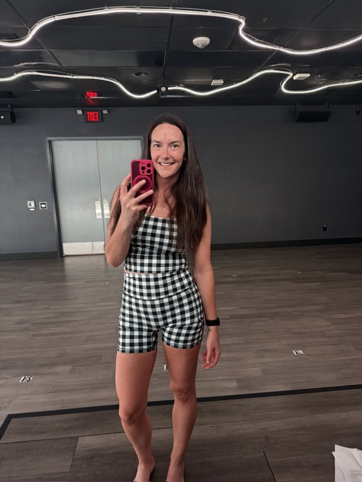
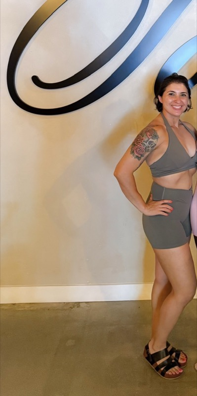

In person or virtual
Nutrition Coaching in San Diego
For busy, active adults in San Diego who want to lose fat, build muscle or stop guessing about food. You get custom macro targets, regular check-ins and a coach who adjusts your plan as you go.
Everything you need to stay consistent
- Custom macro targets and a roadmap
- 45-minute check-ins by video, message or in person in San Diego
- Plan adjustments based on your progress
- Coach messaging (Core and VIP)
- Meal planning and food log reviews (VIP)
- Grocery store coaching, in person or virtual ($95 add-on)
Plans from $149 a month
Self-Guided
$149 / month
A check-in every 2 weeks. For people who know the basics.
Core
$249 / month
Weekly check-ins and coach messaging.
VIP
$349 / month
Unlimited sessions and full support.
Not ready for monthly coaching? Start with the one-time Nutrition Tip-Toe for $179: one 60-minute assessment, plus a $100 credit if you upgrade within 14 days.
Save 15% with a 3-month commitment. Cancel with 30 days' written notice. Compare all plans →
What clients say

Learning macros has totally changed my husband and I's understanding of food. We are both feeling so great, lifting heavier, and losing weight. And I'm literally never hungry and I'm eating more than ever. The pressure of dieting is gone now that we have a better understanding of fueling our bodies to support our lifestyle. This is because of you!!! Thank you 🙏
“
Holy crap! Today was a big day of weight loss. I got on the scale and was in disbelief. I'm eating the macros and really am evaluating how I feel. And obviously still lifting! Let's keep the momentum going. I'm diligent about weighing my food. Water is a must!
“
What I appreciate most is that Jess makes healthy eating feel manageable, not restrictive or intimidating. Her encouragement and practical advice have helped me become more mindful of my food choices and develop healthier habits that fit into my everyday life. Jess genuinely cares about the people she works with and takes the time to provide support, motivation, and guidance along the way.
“Common questions
What does a nutrition coach do?
A nutrition coach builds a personalized eating plan around your goals, training and lifestyle, then keeps you accountable with regular check-ins. At Fuel with Jess, that means macro targets, meal guidance and adjustments based on your progress, not a one-size-fits-all diet.
How much does nutrition coaching cost?
Fuel with Jess coaching plans range from $149 to $349 per month, depending on check-in frequency and level of support. A 3-month commitment saves 15% ($127, $212 or $297 per month), then plans continue month to month. You can cancel with 30 days' written notice. You can also start with the one-time Nutrition Tip-Toe session for $179.
Do you offer virtual nutrition coaching?
Yes. Jess coaches clients virtually anywhere, and in person in San Diego. Virtual clients get the same plans, check-ins and support as local clients.
Can I eat carbs and still lose fat?
Yes. Fat loss comes from your overall energy balance, not from cutting out a food group, and carbs fuel strong training sessions. Jess builds plans that keep carbs in while you reach your body composition goals.
Ready to start?
Book a free 30-minute discovery call. No pressure, just an honest conversation about your goals.
Book your free discovery call →